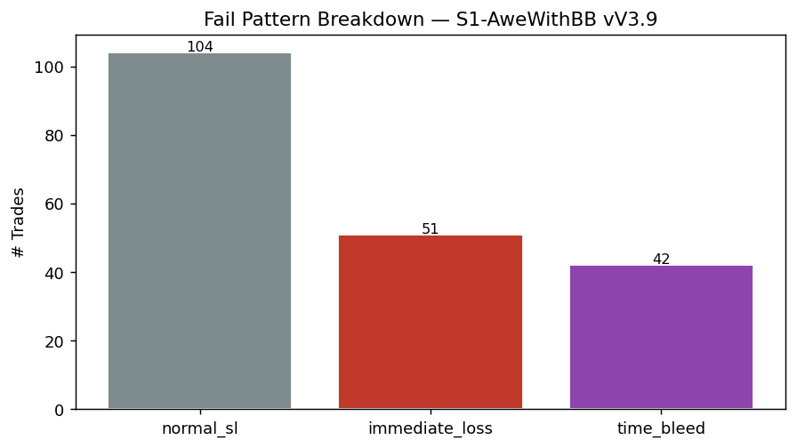
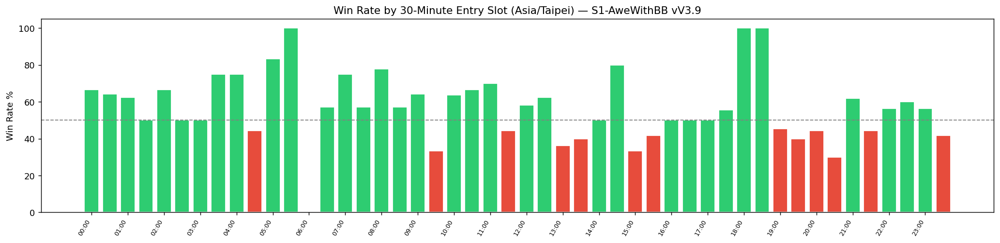

RS-XAUUSD-20260727-004 · XAUUSD · 2026-07-27
S1 AweWithBB V3.9 — fail-pattern report (30-minute contract)
依 30 分鐘粒度的標準失敗型態規範，S1 AweWithBB V3.9 的 450 筆交易在失敗型態、進場時槽、布林區位、DXY 狀態與多時間框對齊上，各自呈現什麼樣的分布？
Headline Metrics 關鍵數字
Key Findings 重點發現
正常停損現在是主要的失敗型態
197 筆虧損中有 104 筆（52.8%）是乾淨的正常停損出場；立即虧損從 V3.4 的 30.9% 降到 25.9%（51 筆）——進場「一開始就錯」的情況減少了。
逆勢（4H 空頭）表現不佳的幅度比 V3.4 更大
在 4H RSI 空頭狀態下的 146 筆交易：勝率 47.95%，對比順勢對齊 304 筆的 60.20%（差距 12.25 個百分點，比 V3.4 的 9.6 個百分點更寬）；獲利因子 1.453 對 2.133。
K 棒覆蓋率有改善，但仍然只是部分樣本
51 筆立即虧損中有 19 筆（37.3%）具備重疊的 30 分鐘 OHLCV 與 RSI 價格歷史，高於 V3.4 的 23.3%，但仍未達全樣本。
與已採用的 RS-XAUUSD-20260727-001 基準一致
本報告的整體 n／勝率／獲利因子（450／56.22%／1.869）與 RS-XAUUSD-20260727-001 完全相同，確認這份更深入的報告並未改動已經被採用的 S1 建議分數證據。
Failure Types 失敗型態
197 筆虧損裡，正常停損佔 52.8%、立即虧損 25.9%、時間耗損 21.3%。立即虧損比 V3.4 的 30.9% 下降，代表 V3.9 的改進落在進場品質。

Fail Type Breakdown
| normal sl | 104 | 52.8 |
|---|---|---|
| immediate loss | 51 | 25.9 |
| time bleed | 42 | 21.3 |
4H Trend Alignment 多時間框對齊
本報告最重要的一項：4H 空頭狀態下進場 146 筆，勝率 47.95%、獲利因子 1.453；順勢對齊 304 筆則是 60.20%、2.133。差距 12.25 個百分點，比 V3.4 的 9.6 個百分點更寬——V3.9 沒有修好這個弱點。

By 4H RSI State
| bearish | 146 | 47.95 | 1.453 |
|---|---|---|---|
| bullish | 153 | 65.36 | 2.499 |
| neutral | 111 | 51.35 | 1.696 |
30-Minute Entry Slots 進場時槽
48 個時槽的分布。多數格子只有個位數到十幾筆交易，本報告也沒有計算可解析下限，所以逐格差異只能當描述看，不能當成新的時機規則。

By 30-Minute Entry Slot
| 00:00 | 6 | 66.67 | 2.257 |
|---|---|---|---|
| 00:30 | 14 | 64.29 | 2.79 |
| 01:00 | 8 | 62.5 | 4.673 |
| 01:30 | 8 | 50 | 1.902 |
| 02:00 | 12 | 66.67 | 4.131 |
| 02:30 | 10 | 50 | 0.873 |
| 03:00 | 6 | 50 | 1.847 |
| 03:30 | 8 | 75 | 3.048 |
| 04:00 | 4 | 75 | 5.548 |
| 04:30 | 9 | 44.44 | 0.804 |
| 05:00 | 6 | 83.33 | 4.949 |
| 05:30 | 2 | 100 | — |
| 06:00 | 0 | — | — |
| 06:30 | 7 | 57.14 | 1.371 |
| 07:00 | 4 | 75 | 7.899 |
| 07:30 | 14 | 57.14 | 2.614 |
| 08:00 | 9 | 77.78 | 4.756 |
| 08:30 | 7 | 57.14 | 2.184 |
| 09:00 | 14 | 64.29 | 1.892 |
| 09:30 | 15 | 33.33 | 0.496 |
| 10:00 | 11 | 63.64 | 3.186 |
| 10:30 | 9 | 66.67 | 2.031 |
| 11:00 | 10 | 70 | 2.328 |
| 11:30 | 9 | 44.44 | 1.298 |
| 12:00 | 12 | 58.33 | 2.074 |
| 12:30 | 8 | 62.5 | 2.539 |
| 13:00 | 11 | 36.36 | 0.573 |
| 13:30 | 5 | 40 | 1.813 |
| 14:00 | 6 | 50 | 2.309 |
| 14:30 | 10 | 80 | 4.651 |
| 15:00 | 6 | 33.33 | 0.498 |
| 15:30 | 12 | 41.67 | 1.309 |
| 16:00 | 8 | 50 | 2.292 |
| 16:30 | 12 | 50 | 1.907 |
| 17:00 | 6 | 50 | 1.856 |
| 17:30 | 9 | 55.56 | 1.593 |
| 18:00 | 2 | 100 | — |
| 18:30 | 8 | 100 | — |
| 19:00 | 11 | 45.45 | 1.253 |
| 19:30 | 5 | 40 | 0.672 |
| 20:00 | 9 | 44.44 | 1.297 |
| 20:30 | 10 | 30 | 0.433 |
| 21:00 | 21 | 61.9 | 1.682 |
| 21:30 | 18 | 44.44 | 0.783 |
| 22:00 | 16 | 56.25 | 2.096 |
| 22:30 | 15 | 60 | 2.017 |
| 23:00 | 16 | 56.25 | 1.284 |
| 23:30 | 12 | 41.67 | 0.711 |
Bollinger Band Zone 布林區位
進場當下價格落在布林通道哪一區的分布。兩端分區樣本很小，讀的時候要連同 n 一起看。

By BB Zone
| below lower | 1 | 0 | 0 |
|---|---|---|---|
| near lower | 1 | 0 | 0 |
| lower mid | 8 | 25 | 0.735 |
| near middle | 25 | 28 | 0.896 |
| upper mid | 61 | 57.38 | 1.85 |
| near upper | 40 | 60 | 2.075 |
| above upper | 29 | 79.31 | 6.828 |
DXY Regime DXY 狀態
依 DXY 所處的 RSI 區間分組。這是描述性脈絡，本報告沒有主張 DXY 狀態可以當成進場條件。

By DXY Bucket
| neutral high(50-70) | 213 | 52.11 | 1.667 |
|---|---|---|---|
| neutral low(30-50) | 201 | 61.19 | 2.136 |
| overbought(>70) | 17 | 52.94 | 1.131 |
| oversold(<30) | 19 | 52.63 | 2.485 |
詮釋與實務意義
這是 S1 V3.9 的完整診斷報告。它不提出新規則，而是把這個策略「輸在哪裡」攤開，讓後續的改進嘗試有共同的基準可以對照。 最實用的一項是失敗型態的組成：197 筆虧損中，**104 筆（52.8%）是乾淨的正常停損**，立即虧損只佔 25.9%（51 筆）。相較 V3.4 的 30.9%，V3.9 的進場「一開始就錯」的比例確實下降了——這代表 V3.9 的改進主要發生在進場品質，而不是出場。 ⚠️ 但同一份資料也顯示一個沒有被修好、反而更明顯的弱點：**逆勢進場**。在 4H RSI 呈空頭狀態下的 146 筆交易，勝率 47.95%、獲利因子 1.453；順勢對齊的 304 筆則是 60.20%、2.133。**差距 12.25 個百分點，比 V3.4 的 9.6 個百分點更寬**。V3.9 沒有解決這個問題，它變得更突出了。這是本報告最值得帶進實務判斷的一項描述性脈絡。 關於整體數字的一致性：450 筆／56.22%／1.869 與已採用的 RS-XAUUSD-20260727-001 完全相同。這份更深入的報告**沒有改動**已經被採用的 S1 建議分數證據，兩者是同一批交易的不同切面，不是互相競爭的結果。 最後一個必須連帶讀的限制：立即虧損那一組只有 **19/51（37.3%）** 有可對照的 30 分鐘K 棒資料。雖然比 V3.4 的 23.3% 好，但仍然是部分樣本——任何關於「立即虧損當下發生了什麼」的推論都只建立在三分之一多一點的案例上。
限制與注意事項
- 立即虧損的 K 棒覆蓋率只有 37.3%（51 筆中有 19 筆具備重疊的 30 分鐘 OHLCV 與 RSI 歷史）。關於立即虧損成因的任何觀察都只建立在這個子集上，不是全樣本。
- 本報告是描述性診斷，不是策略改進提案。逆勢表現較差、時槽差異等觀察都沒有配上可解析下限或置換檢定，因此不足以直接轉成新的進場規則。
- 各 30 分鐘時槽的樣本量差異很大，多數格子只有個位數到十幾筆交易。逐格比較要連同 n 一起看。
- 資料來自 TradingView 策略測試匯出檔，是單一固定版本的回測結果；本報告沒有重新最佳化或重跑策略邏輯。
- 整體數字與 RS-XAUUSD-20260727-001 相同，兩份報告不是互相獨立的證據，而是同一批交易的不同切面。